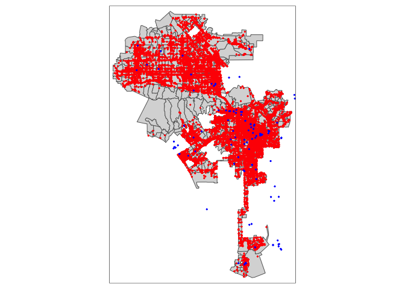
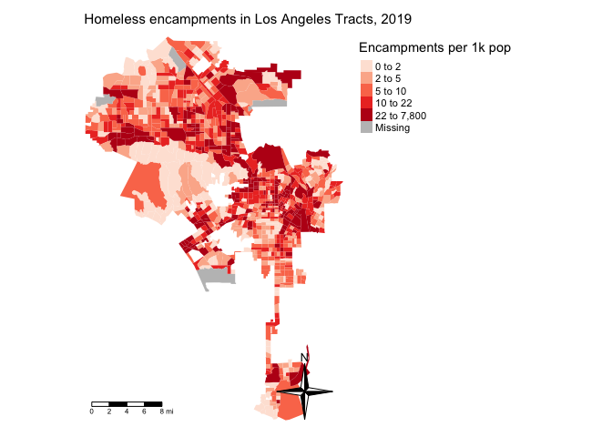

Lab 8: Mapping Open Data
CRD 150 - Quantitative Methods in Community Research
Professor Noli Brazil
February 28, 2024
In our journey into spatial R, we’ve been exclusively working with polygon data. In this guide you will learn how to handle and descriptively analyze point data. More broadly, we will cover how to access and clean data from Open Data portals. The objectives of the guide are as follows
- Learn how to download data from an Open Data portal
- Learn how to read point data into R
- Learn how to put latitude and longitude data on a map
- Learn how to put street addresses on a map
- Learn how to map point data
To achieve these objectives, we will examine the spatial distribution of homeless encampments in the City of Los Angeles using 311 data downloaded from the city’s open data portal.
This lab guide follows closely and supplements the material presented in Chapters 2.4, 2.5, 4.2 and 7 in the textbook Geocomputation with R (GWR).
Assignment 8 is due by 10:00 am, March 6th on Canvas.
See here for
assignment guidelines. You must submit an .Rmd file and its
associated .html file. Name the files:
yourLastName_firstInitial_asgn08. For example: brazil_n_asgn08.
Open up an R Markdown file
Download the Lab
template into an appropriate folder on your hard drive (preferably,
a folder named ‘Lab 8’), open it in R Studio, and type and run your code
there. The template is also located on Canvas under Files. Change the
title (“Lab 8”) and insert your name and date. Don’t change anything
else inside the YAML (the stuff at the top in between the
---). For a rundown on the use of R Markdown, see the assignment
guidelines.
Installing and loading packages
You’ll need to install the following package in R. We’ll talk about what this package provides as its relevant functions come up in the guide.
install.packages("tidygeocoder")You’ll need to load the following packages. Unlike installing, you
will always need to load packages whenever you start a new R session.
You’ll also always need to use library() in your R Markdown
file.
library(sf)
library(tidyverse)
library(tidycensus)
library(tigris)
library(tmap)
library(rmapshaper)
library(tidygeocoder)Read in census tract data
We will need to bring in census tract polygon features and racial composition data from the 2015-2019 American Community Survey using the Census API and keep tracts within Los Angeles city boundaries using a clip. The code for accomplishing these tasks is below. We won’t go through each line of code in detail because we’ve covered all of these operations and functions in prior labs. I’ve embedded comments within the code that briefly explain what each chunk is doing, but go back to prior guides (or RDS/GWR) if you need further help.
# Bring in census tract data.
ca.tracts <- get_acs(geography = "tract",
year = 2019,
variables = c(tpop = "B01003_001", tpopr = "B03002_001",
nhwhite = "B03002_003", nhblk = "B03002_004",
nhasn = "B03002_006", hisp = "B03002_012"),
state = "CA",
survey = "acs5",
output = "wide",
geometry = TRUE)
# Calculate percent race/ethnicity, rename variables, and keep essential vars.
ca.tracts <- ca.tracts %>%
mutate(pnhwhite = nhwhiteE/tpoprE, pnhasn = nhasnE/tpoprE,
pnhblk = nhblkE/tpoprE, phisp = hispE/tpoprE) %>%
rename(tpop = tpopE) %>%
select(c(GEOID,tpop, pnhwhite, pnhasn, pnhblk, phisp))
# Bring in city boundary data
pl <- places(state = "CA", cb = TRUE)
# Keep LA city
la.city <- filter(pl, NAME == "Los Angeles")
#Clip tracts using LA boundary
la.city.tracts <- ms_clip(target = ca.tracts, clip = la.city, remove_slivers = TRUE)Make sure to take a look at the final data object.
glimpse(la.city.tracts)## Rows: 1,001
## Columns: 7
## $ GEOID <chr> "06037199800", "06037291300", "06037292000", "06037209510", "…
## $ tpop <dbl> 5828, 3037, 6567, 3076, 5993, 3710, 3927, 3445, 4052, 2751, 3…
## $ pnhwhite <dbl> 0.013040494, 0.147184722, 0.075376884, 0.032509753, 0.4768897…
## $ pnhasn <dbl> 0.363761153, 0.433322358, 0.177097609, 0.233420026, 0.1558484…
## $ pnhblk <dbl> 0.0001715854, 0.0951596971, 0.1067458505, 0.0159297789, 0.025…
## $ phisp <dbl> 0.62302677, 0.24629569, 0.55413431, 0.68498049, 0.28483230, 0…
## $ geometry <POLYGON [°]> POLYGON ((-118.2156 34.0736..., POLYGON ((-118.3091 3…Point data from an open data portal
We will be examining the spatial distribution of homeless encampments in Los Angeles City. We will download homeless encampment data from Los Angeles’ Open Data portal. The data represent homeless encampment locations in 2019 as reported through the City’s 311 system. To download the data from LA’s open data portal, follow these steps:
- Navigate to the Los Angeles City Open Data portal. Note the record layout for the dataset further down the page.
- Click on Actions and then Query data. This will bring up the data in an excel style worksheet.
- You’ll find that there are over one million 311 requests in 2019. Rather than bring all of these requests into R, let’s just filter for homeless encampments. To do this, click on Filter, Add a New Filter Condition, select Request Type from the first pull down menu, then type in Homeless Encampment in the first text box. Hit return/enter.
- Click on Export and select CSV. Download the file into an appropriate folder on your hard drive. Name the file “homeless311_la_2019”.
Read the file into R using the function read_csv(). Make
sure your current working directory is pointing to the appropriate
folder (use getwd() to see the current directory and
setwd() to change it).
homeless311.df <- read_csv("homeless311_la_2019.csv")If you had trouble downloading the file, I uploaded it onto GitHub. Read the file into R using the following code.
homeless311.df <- read_csv("https://raw.githubusercontent.com/crd150/data/master/homeless311_la_2019.csv")Whenever you bring a dataset into R, always look at it. For example,
we examine homeless311.df using glimpse()
glimpse(homeless311.df)## Rows: 55,569
## Columns: 34
## $ SRNumber <chr> "1-1523590871", "1-1523576655", "1-152357498…
## $ CreatedDate <chr> "12/31/2019 11:26:00 PM", "12/31/2019 09:27:…
## $ UpdatedDate <chr> "01/14/2020 07:52:00 AM", "01/08/2020 01:42:…
## $ ActionTaken <chr> "SR Created", "SR Created", "SR Created", "S…
## $ Owner <chr> "BOS", "BOS", "BOS", "BOS", "BOS", "LASAN", …
## $ RequestType <chr> "Homeless Encampment", "Homeless Encampment"…
## $ Status <chr> "Closed", "Closed", "Closed", "Closed", "Clo…
## $ RequestSource <chr> "Mobile App", "Mobile App", "Mobile App", "M…
## $ CreatedByUserOrganization <chr> "Self Service", "Self Service", "Self Servic…
## $ MobileOS <chr> "iOS", "Android", "iOS", "iOS", "iOS", NA, "…
## $ Anonymous <chr> "N", "Y", "Y", "Y", "Y", "N", "N", "N", "N",…
## $ AssignTo <chr> "WV", "WV", "WV", "WV", "WV", "NC", "WV", "W…
## $ ServiceDate <chr> "01/14/2020 12:00:00 AM", "01/10/2020 12:00:…
## $ ClosedDate <chr> "01/14/2020 07:51:00 AM", "01/08/2020 01:42:…
## $ AddressVerified <chr> "Y", "Y", "Y", "Y", "Y", "Y", "Y", "Y", "Y",…
## $ ApproximateAddress <chr> NA, NA, NA, NA, NA, "N", NA, NA, NA, NA, "N"…
## $ Address <chr> "CANOGA AVE AT VANOWEN ST, 91303", "23001 W …
## $ HouseNumber <dbl> NA, 23001, NA, 5550, 5550, NA, 5200, 5500, 2…
## $ Direction <chr> NA, "W", NA, "N", "N", NA, "N", "N", "S", "W…
## $ StreetName <chr> NA, "VANOWEN", NA, "WINNETKA", "WINNETKA", N…
## $ Suffix <chr> NA, "ST", NA, "AVE", "AVE", NA, "AVE", "AVE"…
## $ ZipCode <dbl> 91303, 91307, 91367, 91364, 91364, 90004, 91…
## $ Latitude <dbl> 34.19375, 34.19388, 34.17220, 34.17143, 34.1…
## $ Longitude <dbl> -118.5975, -118.6281, -118.5710, -118.5707, …
## $ Location <chr> "(34.1937512753, -118.597510305)", "(34.1938…
## $ TBMPage <dbl> 530, 529, 560, 560, 560, 594, 559, 559, 634,…
## $ TBMColumn <chr> "B", "G", "E", "E", "E", "A", "H", "J", "B",…
## $ TBMRow <dbl> 6, 6, 2, 2, 2, 7, 3, 2, 6, 3, 3, 2, 7, 3, 2,…
## $ APC <chr> "South Valley APC", "South Valley APC", "Sou…
## $ CD <dbl> 3, 12, 3, 3, 3, 13, 3, 3, 1, 3, 7, 3, 3, 4, …
## $ CDMember <chr> "Bob Blumenfield", "John Lee", "Bob Blumenfi…
## $ NC <dbl> 13, 11, 16, 16, 16, 55, 16, 16, 76, 16, 101,…
## $ NCName <chr> "CANOGA PARK NC", "WEST HILLS NC", "WOODLAND…
## $ PolicePrecinct <chr> "TOPANGA", "TOPANGA", "TOPANGA", "TOPANGA", …Let’s bring in a csv file containing the street addresses of homeless shelters and services in Los Angeles County (as of 2019), which I also downloaded from Los Angeles’ open data portal. I uploaded the file onto Github so you don’t have to download it from the portal like we did above with encampments. The file is also located on Canvas (Week 8 - Lab).
shelters.df <- read_csv("https://raw.githubusercontent.com/crd150/data/master/Homeless_Shelters_and_Services.csv")Take a look at the data
glimpse(shelters.df)## Rows: 182
## Columns: 23
## $ source <chr> "211", "211", "211", "211", "211", "211", "211", "211", "…
## $ ext_id <lgl> NA, NA, NA, NA, NA, NA, NA, NA, NA, NA, NA, NA, NA, NA, N…
## $ cat1 <chr> "Social Services", "Social Services", "Social Services", …
## $ cat2 <chr> "Homeless Shelters and Services", "Homeless Shelters and …
## $ cat3 <lgl> NA, NA, NA, NA, NA, NA, NA, NA, NA, NA, NA, NA, NA, NA, N…
## $ org_name <chr> NA, NA, NA, NA, NA, NA, NA, NA, NA, "www.catalystfdn.org"…
## $ Name <chr> "Special Service For Groups - Project 180", "1736 Family…
## $ addrln1 <chr> "420 S. San Pedro", "2116 Arlington Ave", "1736 Monterey …
## $ addrln2 <chr> NA, "Suite 200", NA, NA, NA, NA, "4th Fl.", NA, NA, NA, N…
## $ city <chr> "Los Angeles", "Los Angeles", "Hermosa Beach", "Monrovia"…
## $ state <chr> "CA", "CA", "CA", "CA", "CA", "CA", "CA", "CA", "CA", "CA…
## $ hours <chr> "SITE HOURS: Monday through Friday, 8:30am to 4:30pm.", …
## $ email <lgl> NA, NA, NA, NA, NA, NA, NA, NA, NA, NA, NA, NA, NA, NA, N…
## $ url <chr> "ssgmain.org/", "www.1736fcc.org", "www.1736fcc.org", "ww…
## $ info1 <lgl> NA, NA, NA, NA, NA, NA, NA, NA, NA, NA, NA, NA, NA, NA, N…
## $ info2 <lgl> NA, NA, NA, NA, NA, NA, NA, NA, NA, NA, NA, NA, NA, NA, N…
## $ post_id <dbl> 772, 786, 788, 794, 795, 946, 947, 1073, 1133, 1283, 1353…
## $ description <chr> "The agency provides advocacy, child care, HIV/AIDS servi…
## $ zip <dbl> 90013, 90018, 90254, 91016, 91776, 90028, 90027, 90019, 9…
## $ link <chr> "http://egis3.lacounty.gov/lms/?p=772", "http://egis3.lac…
## $ use_type <chr> "publish", "publish", "publish", "publish", "publish", "p…
## $ date_updated <chr> "2017/10/30 14:43:13+00", "2017/10/06 16:28:29+00", "2017…
## $ dis_status <chr> NA, NA, NA, NA, NA, NA, NA, NA, NA, NA, NA, NA, NA, NA, N…Putting points on a map
Notice that the data we brought in are not spatial. They are regular tibbles, not sf objects. They’re class is not sf.
class(homeless311.df)## [1] "spec_tbl_df" "tbl_df" "tbl" "data.frame"class(shelters.df)## [1] "spec_tbl_df" "tbl_df" "tbl" "data.frame"And they don’t have geometry as a column.
names(homeless311.df)## [1] "SRNumber" "CreatedDate"
## [3] "UpdatedDate" "ActionTaken"
## [5] "Owner" "RequestType"
## [7] "Status" "RequestSource"
## [9] "CreatedByUserOrganization" "MobileOS"
## [11] "Anonymous" "AssignTo"
## [13] "ServiceDate" "ClosedDate"
## [15] "AddressVerified" "ApproximateAddress"
## [17] "Address" "HouseNumber"
## [19] "Direction" "StreetName"
## [21] "Suffix" "ZipCode"
## [23] "Latitude" "Longitude"
## [25] "Location" "TBMPage"
## [27] "TBMColumn" "TBMRow"
## [29] "APC" "CD"
## [31] "CDMember" "NC"
## [33] "NCName" "PolicePrecinct"names(shelters.df)## [1] "source" "ext_id" "cat1" "cat2" "cat3"
## [6] "org_name" "Name" "addrln1" "addrln2" "city"
## [11] "state" "hours" "email" "url" "info1"
## [16] "info2" "post_id" "description" "zip" "link"
## [21] "use_type" "date_updated" "dis_status"In order to convert these nonspatial objects into spatial objects, we need to geolocate them. To do this, use the geographic coordinates (longitude and latitude) to place points on a map. The file homeless311.df has longitude and latitude coordinates, so we have all the information we need to convert it to a spatial object.
We will use the function st_as_sf() to create a point
sf object out of homeless311.df using the
geographic coordinates. Geographic coordinates are in the form of a
longitude and latitude, where longitude is your X coordinate and spans
East/West and latitude is your Y coordinate and spans North/South. The
function st_as_sf() requires you to specify the longitude
and latitude of each point using the coords = argument,
which are conveniently stored in the variables Longitude and
Latitude in homeless311.df. We need to take out any
observations with missing values NA for either
Longitude or Latitude. Do this by using the function
is.na() within the filter() function.
homeless311.df <- homeless311.df %>%
filter(is.na(Longitude) == FALSE & is.na(Latitude) == FALSE)You also need to establish the Coordinate Reference System (CRS)
using the crs = argument, which I covered in Monday’s
lecture. To establish a CRS, you will need to specify the Geographic
Coordinate System (so you know where your points are on Earth), which
encompasses the datum and ellipse, and a Projection (a way of putting
points in 2 dimensions or on a flat map).
homeless311.sf <- st_as_sf(homeless311.df,
coords = c("Longitude", "Latitude"),
crs = "+proj=longlat +datum=NAD83 +ellps=WGS84")For crs =, we establish the projection
+proj=, datum +datum= and ellipse
+ellps. Because we have latitude and longitude,
+proj= is established as longlat. We use NAD83
for datum and WGS84 ellipse. The most common datum and ellipsoid
combinations are listed in Figure 1 in the
Coordinate_Reference_Systems.pdf document on Canvas (Files - Other
Resources). For the purposes of this lab and assignment 8 (and in your
final project if you choose to use point data), use the crs specified
above.
Note that the CRS should have only have one space in between
+proj=longlat, +datum=WGS84 and
+ellps=WGS84. And you should have no spaces anywhere else.
Be careful about this because if you introduce spaces elsewhere you will
get an incorrect CRS (and R will not give you an error to let you know).
Also note that the longitude will always go before the latitude in
coords =.
Now we can map encampments over Los Angeles City tracts using our new
best friend tm_shape(), whom we met in Lab 5.
Because encampments are points, we need to use tm_dots() to
map them.
tm_shape(la.city.tracts) +
tm_polygons() +
tm_shape(homeless311.sf) +
tm_dots(col="red")Street Addresses
Often you will get point data that won’t have longitude/X and latitude/Y coordinates but instead have street addresses. The process of going from address to X/Y coordinates is known as geocoding.
To demonstrate geocoding, type in your home street address, city and state inside the quotes below. If your home address isn’t working, use the address for Woodstock Pizza (238 G St, Davis, CA). We are saving our address in an object we named myaddress.df.
myaddress.df <- tibble(street = "",
city = "",
state = "")This creates a tibble with your street, city and state saved in three
variables. To geocode addresses to longitude and latitude, use the
function geocode() which is a part of the
tidygeocoder package. Use geocode() as
follows
myaddress.df <- geocode(myaddress.df,
street = street,
city = city,
state = state,
method = "osm")Here, we specify street, city and state variables, which are
conveniently named street, city, and state in
myaddress.df. The argument method = "osm"
specifies the geocoder used to map addresses to longitude/latitude
locations. In the above case 'osm' uses the free geocoder
provided by OpenStreetMap to find the address. Think of a geocoder as R
going to the OpenStreetMap website,
searching for each address, plucking the latitude and longitude of the
address, and saving it into a tibble named myaddress.df. Other
geocoders include Google Maps (not free) and the US Census (free). If you’re
having trouble geocoding using “osm”, try “census” for
method =.
If you view this object, you’ll find the latitude lat and longitude long attached as columns.
glimpse(myaddress.df)Convert this to an sf object using the function
st_as_sf() like we did above with the encampments.
myaddress.sf <- st_as_sf(myaddress.df, coords = c("long", "lat"))Type in tmap_mode("view") and then map
myaddress.sf. Zoom into the point. Did it get your home address
correct?
The file shelters.df contains no latitude and longitude data, so we need to convert the street addresses contained in the variables addrln1, city and state. View the data to verify.
Use the function geocode() like we did above. We use
method = "osm" to indicate we want to use the OSM API to
geocode the addresses for us (as opposed to other geocoders that are
available). The process may take a few minutes so be patient.
shelters.geo <- geocode(shelters.df,
street = addrln1,
city = city,
state = state,
method = "osm")Look at the column names.
names(shelters.geo)## [1] "source" "ext_id" "cat1" "cat2" "cat3"
## [6] "org_name" "Name" "addrln1" "addrln2" "city"
## [11] "state" "hours" "email" "url" "info1"
## [16] "info2" "post_id" "description" "zip" "link"
## [21] "use_type" "date_updated" "dis_status" "lat" "long"And take a look at the data
glimpse(shelters.geo)## Rows: 182
## Columns: 25
## $ source <chr> "211", "211", "211", "211", "211", "211", "211", "211", "…
## $ ext_id <lgl> NA, NA, NA, NA, NA, NA, NA, NA, NA, NA, NA, NA, NA, NA, N…
## $ cat1 <chr> "Social Services", "Social Services", "Social Services", …
## $ cat2 <chr> "Homeless Shelters and Services", "Homeless Shelters and …
## $ cat3 <lgl> NA, NA, NA, NA, NA, NA, NA, NA, NA, NA, NA, NA, NA, NA, N…
## $ org_name <chr> NA, NA, NA, NA, NA, NA, NA, NA, NA, "www.catalystfdn.org"…
## $ Name <chr> "Special Service For Groups - Project 180", "1736 Family…
## $ addrln1 <chr> "420 S. San Pedro", "2116 Arlington Ave", "1736 Monterey …
## $ addrln2 <chr> NA, "Suite 200", NA, NA, NA, NA, "4th Fl.", NA, NA, NA, N…
## $ city <chr> "Los Angeles", "Los Angeles", "Hermosa Beach", "Monrovia"…
## $ state <chr> "CA", "CA", "CA", "CA", "CA", "CA", "CA", "CA", "CA", "CA…
## $ hours <chr> "SITE HOURS: Monday through Friday, 8:30am to 4:30pm.", …
## $ email <lgl> NA, NA, NA, NA, NA, NA, NA, NA, NA, NA, NA, NA, NA, NA, N…
## $ url <chr> "ssgmain.org/", "www.1736fcc.org", "www.1736fcc.org", "ww…
## $ info1 <lgl> NA, NA, NA, NA, NA, NA, NA, NA, NA, NA, NA, NA, NA, NA, N…
## $ info2 <lgl> NA, NA, NA, NA, NA, NA, NA, NA, NA, NA, NA, NA, NA, NA, N…
## $ post_id <dbl> 772, 786, 788, 794, 795, 946, 947, 1073, 1133, 1283, 1353…
## $ description <chr> "The agency provides advocacy, child care, HIV/AIDS servi…
## $ zip <dbl> 90013, 90018, 90254, 91016, 91776, 90028, 90027, 90019, 9…
## $ link <chr> "http://egis3.lacounty.gov/lms/?p=772", "http://egis3.lac…
## $ use_type <chr> "publish", "publish", "publish", "publish", "publish", "p…
## $ date_updated <chr> "2017/10/30 14:43:13+00", "2017/10/06 16:28:29+00", "2017…
## $ dis_status <chr> NA, NA, NA, NA, NA, NA, NA, NA, NA, NA, NA, NA, NA, NA, N…
## $ lat <dbl> 33.97213, 34.03751, 33.86655, 34.14560, 34.10297, 34.1016…
## $ long <dbl> -118.2695, -118.3175, -118.3993, -118.0012, -118.0975, -1…We see the latitudes and longitudes are attached to the variables lat and long, respectively. Notice that not all the addresses were successfully geocoded.
summary(shelters.geo$lat)## Min. 1st Qu. Median Mean 3rd Qu. Max. NA's
## 33.74 33.98 34.05 34.06 34.10 34.70 20Several shelters received an NA. This is likely because
the addresses are not correct, has errors, or are not fully specified.
You’ll have to manually fix these issues, which becomes time consuming
if you have a really large data set. For the purposes of this lab, let’s
just discard these, but in practice, make sure to double check your
address data (See the document Geocoding_Best_Practices.pdf in the Other
Resources folder on Canvas for best practices for cleaning address
data). We use the filter() function to filter out the
NAs.
shelters.geo <- shelters.geo %>%
filter(is.na(lat) == FALSE & is.na(long) == FALSE)Convert latitude and longitude data into spatial points using the
function st_as_sf() like we did above for homeless
encampments.
shelters.sf <- st_as_sf(shelters.geo,
coords = c("long", "lat"),
crs = "+proj=longlat +datum=NAD83 +ellps=WGS84")Now, let’s map shelters and encampments on top of tracts.
tm_shape(la.city.tracts) +
tm_polygons() +
tm_shape(homeless311.sf) +
tm_dots(col="red") +
tm_shape(shelters.sf) +
tm_dots(col="blue")
Mapping point patterns
Other than mapping their locations (e.g. pin or dot map), how else can we visually present point locations? When working with neighborhoods, we can examine point distributions by summing up the number of points in each neighborhood.
To do this, we can use the function aggregate(), which
is part of the sf package.
hcamps_agg <- aggregate(homeless311.sf["SRNumber"],
la.city.tracts,
FUN = "length")- The first argument is the sf points you want to
count, in our case homeless311.sf.
- You then include in bracket and quotes the unique ID for each point, in our case “SRNumber”.
- The next argument is the object you want to sum the points for, in
our case Los Angeles census tracts la.city.tracts.
- Finally,
FUN = "length"tells R to sum up the number of points in each tract.
Take a look at the object we created.
glimpse(hcamps_agg)## Rows: 1,001
## Columns: 2
## $ SRNumber <int> 110, 32, 35, 186, 7, 3, 6, 32, 2, 37, 1, 18, 31, 11, 28, 173,…
## $ geometry <POLYGON [°]> POLYGON ((-118.2156 34.0736..., POLYGON ((-118.3091 3…The variable SRNumber gives us the number of points in each of Los Angeles’ tracts. Notice that there are missing values.
summary(hcamps_agg)## SRNumber geometry
## Min. : 1.00 MULTIPOLYGON : 1
## 1st Qu.: 10.00 POLYGON :1000
## Median : 29.00 epsg:4269 : 0
## Mean : 56.83 +proj=long...: 0
## 3rd Qu.: 69.00
## Max. :822.00
## NA's :28This is because there are tracts that have no homeless encampments.
Convert these NA values to 0 using the replace_na()
function within the mutate() function.
hcamps_agg <- hcamps_agg %>%
mutate(SRNumber = replace_na(SRNumber,0))The function replace_na() tells R to replace any NAs
found in the variable SRNumber with the number 0.
Next, we save the variable SRNumber from hcamps_agg
into our main dataset la.city.tracts by creating a new variable
hcamps within mutate().
la.city.tracts <- la.city.tracts %>%
mutate(hcamps = hcamps_agg$SRNumber)We can map the count of encampments by census tract, but counts do not take into consideration exposure. In this case, tracts that are larger in size or greater in population may have more encampments (a concept we covered in Handout 5). Instead, let’s calculate the number of homeless encampments per 1,000 residents.
la.city.tracts <- la.city.tracts %>%
mutate(hcamppop = (hcamps/tpop)*1000)The above code creates the variable hcamppop in
la.city.tracts, which represents the number of homeless
encampments per 1,000 residents. Note that there are tracts with 0
population sizes, so a division of 0 when you created the variable
hcamppop will yield an Inf value, which we covered in Lab 1. Let’s
convert hcamppop to NA for tracts with population sizes of 0
using the replace() function.
la.city.tracts <- la.city.tracts %>%
mutate(hcamppop = replace(hcamppop, tpop == 0, NA))Now we can create a presentable choropleth map of homeless encampments per 1,000 residents for neighborhoods in the City of Los Angeles.
la.city.tracts %>%
tm_shape(unit = "mi") +
tm_polygons(col = "hcamppop", style = "quantile",palette = "Reds",
border.alpha = 0, title = "Encampments per 1k pop") +
tm_scale_bar(position = c("left", "bottom")) +
tm_compass(type = "4star", position = c("right", "bottom")) +
tm_layout(main.title = "Homeless encampments in Los Angeles Tracts, 2019",
main.title.size = 0.95, frame = FALSE,
legend.outside = TRUE, legend.outside.position = "right")
Assignment 8
Download and open the Assignment 8 R Markdown Script. The script can also be found on Canvas (Files - Week 8 - Assignment). Any response requiring a data analysis task must be supported by code you generate to produce your result. (Just examining your various objects in the “Environment” section of R Studio is insufficient—you must use scripted commands.).
- In this question, you will be exploring the spatial distribution of Airbnb listings in the City of Oakland. Airbnb involves renting an entire home, a room or a shared room, typically from a private citizen. The data were downloaded from Airbnb’s public use data site. You will be using the shapefile oak_tracts.zip, which contains Oakland City tracts with their population sizes downloaded from the 2015-2019 American Community Survey, and the csv file oakland_airbnb_dec2020.csv, which contains Airbnb locations in December 2020. The record layout for oakland_airbnb_dec2020.csv can be found here. You will also be using the file station_info.csv, which contains the addresses of BART station locations in Oakland. The files are located on Canvas (Files - Week 8 - Assignment). Save the files in an appropriate folder. Unzip oak_tracts.zip to extract the shapefiles.
- Read the file oakland_airbnb_dec2020.csv into R. Create a point dataset of Airbnb listings using their longitudes and latitudes. (2 points)
- Read the file oak_tracts.shp into R. Create a variable that represents the number of Airbnb listings in each neighborhood. (3 points)
- Create a presentation-ready choropleth map of the number of Airbnb listings per 1,000 residents. (2 points)
- Are neighborhoods with a large presence of Airbnb listings near BART stations, which is the Bay Area’s main public rapid-transit system? Read the file station_info.csv into R. Geocode the BART stations using their street addresses. (2 points)
- Map the BART station point locations onto the choropleth map you created in (c). Based on a visual assessment of the map, are neighborhoods with a large presence of Airbnb listings near BART stations? (1 point)
The purpose of this question is to increase your exposure to the world of open data. In this exercise, you will explore a city’s open data portal, answering questions about one of its data sets and examining the data set in R. Pick one of the following cities and answer the questions that follow.
- Which city did you choose?
- Find a dataset that looks interesting to you and can be downloaded and brought into R. Answer the following questions about this dataset.
- Describe the dataset you selected. What are the variables, the year(s) captured by the data, and the units of observations? (2 points)
- Are you able to manipulate the data online? This includes filtering rows and selecting columns. (1 point)
- Are you able to create visualizations online with the data using graphs and charts? If so, what kinds of graphs and charts? (1 point)
- Are you able to map the data online? If so, what types of maps? (1 point)
- Is the data set accompanied by a codebook with definitions of terms, variables and fields? (1 point)
- Bring the data set into R. Create either a single presentation-ready table, chart or graph that we covered in Lab 4 or a single presentation-ready map that we covered in Lab 5 or Lab 8. Explain what your graphic is showing us. You must show your code to get full points for this question. (4 points)

This
work is licensed under a
Creative
Commons Attribution-NonCommercial 4.0 International License.
Website created and maintained by Noli Brazil